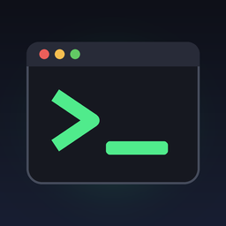
Run real Linux on your iPhone
Eight unmodified Linux distributions on a normal, non-jailbroken iPhone and iPad, from the App Store: Debian comes with the app; Ubuntu, Alpine, Fedora, AlmaLinux, Rocky Linux, openSUSE and Arch Linux ARM are one tap away. Real apt, dnf, zypper, pacman and apk, Python, git, SSH and tmux, servers in a built-in browser, commands from Shortcuts and Siri. Free and open source.
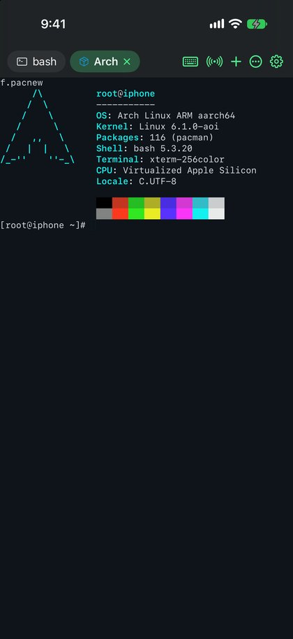
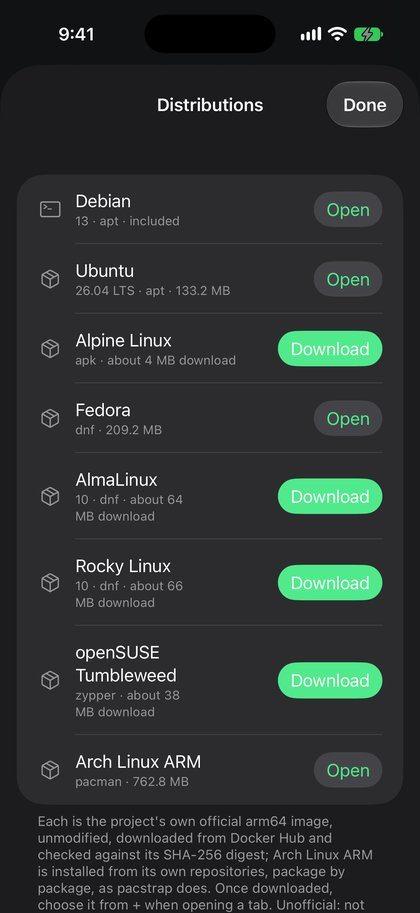
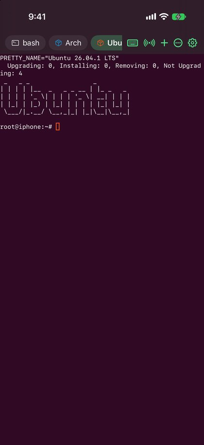
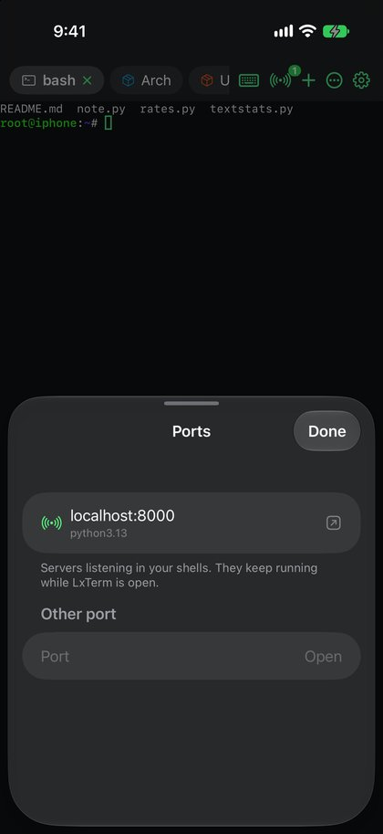
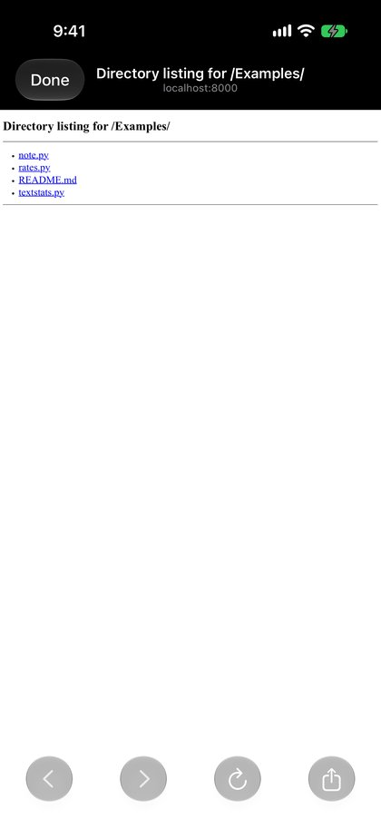
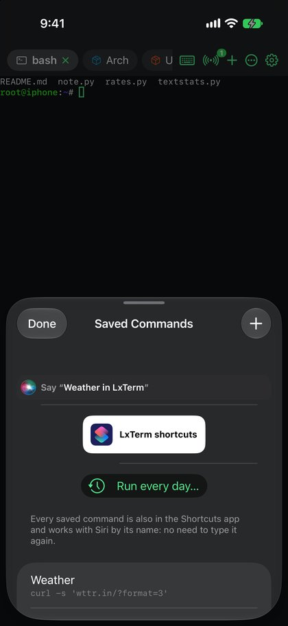
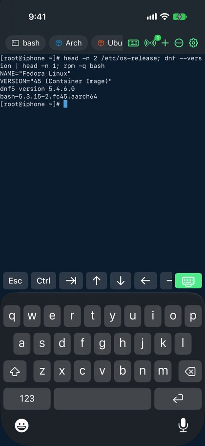
Real Linux distributions, not a set of ported commands
On iPad
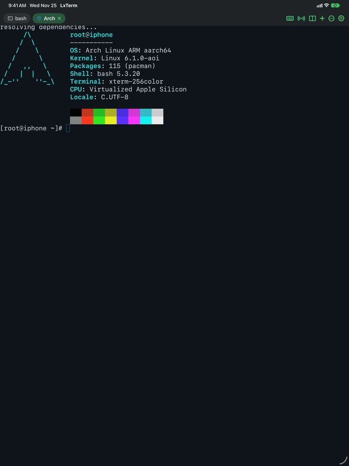
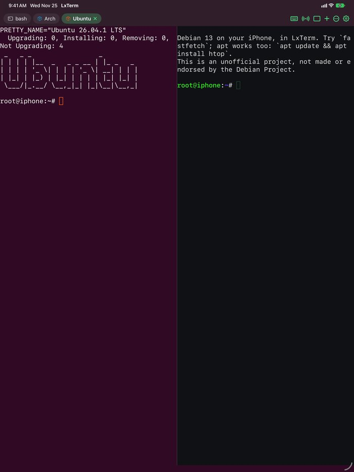
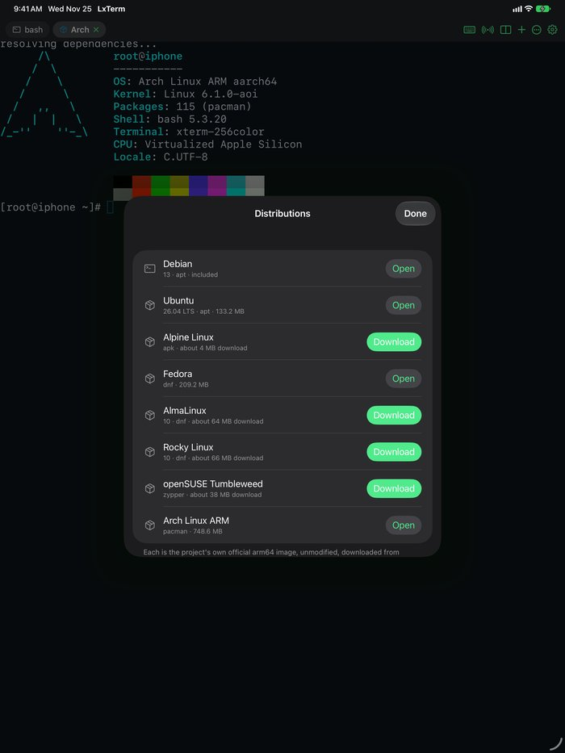
How it works
iOS does not let apps generate machine code, so LxTerm brings its own AArch64 interpreter and a Linux system-call layer: real fork and execve, pipes, signals, job control, sockets and a terminal with Linux's line discipline. Every distribution's binaries run inside it as they would on an arm64 machine, and its continuous integration installs real packages with each package manager on every change. Starting a big program takes a few seconds and heavy computing is slower than on a computer; an accelerated engine (the same core as WebAssembly in WebKit) makes long jobs several times faster in Debian tabs. The code is open source on GitHub.
Questions
Can I run Linux on an iPhone without a jailbreak?
Yes. Install LxTerm from the App Store and open it: Debian 13 for arm64 starts on the phone itself in a few seconds, and seven more distributions are one tap away. No jailbreak, no sideloading, no remote server.
Which Linux distributions can I run on iPhone?
Debian 13 (included), Ubuntu 26.04 LTS, Alpine Linux, Fedora, AlmaLinux 10, Rocky Linux 10, openSUSE Tumbleweed and Arch Linux ARM, each from its official arm64 image or repositories, unmodified.
How do I use apt, dnf or pacman on my iPhone?
Open a tab in the distribution and use its package manager as usual: apt install htop in Debian or Ubuntu, dnf install htop in Fedora, AlmaLinux or Rocky Linux, pacman -S htop in Arch Linux ARM.
Can I run Python and pip on iPhone?
Yes. Python 3 is installed in Debian; pip installs packages from PyPI, including compiled ones such as polars, because LxTerm runs real Linux arm64 binaries.
Can I run a web server or Jupyter on iPhone?
Yes. Start it in a tab and it appears under Ports; open it in the built-in browser. It keeps running while LxTerm is open.
How is LxTerm different from iSH and a-Shell?
iSH emulates a 32-bit x86 PC running Alpine; a-Shell offers commands ported to iOS. LxTerm runs the distributions' own 64-bit ARM programs unmodified, with their package managers and archives.
Is it fast?
Programs run in an interpreter, because iOS allows no JIT. Shell work, scripts, editors, git and Python are comfortable; starting a big program takes a few seconds, and heavy computing is slower than on a computer.
Is LxTerm free?
Yes, free with no ads or purchases, and open source under the GPL-3.0.